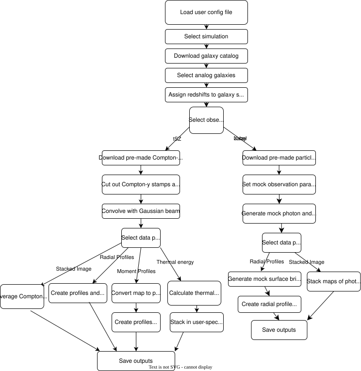

Overview¶
Why was RAFIKI-CGM Developed?¶
Understanding how different physical processes such as AGN feedback shape galactic environments and diffuse gas is a key question of modern astrophysics. Cosmological simulations provide a powerful tool for studying galactic evolution, as while they are calibrated to match global galaxy properties, they contain different models for baryonic processes that can lead to very different predictions for gas properties. Constraining these models and understanding the role feedback plays in galaxy evolution requires robust comparisons of simulations and observations. This is not a trivial process, but RAFIKI-CGM aims to make it as simple and robust as possible!
The hot gas phase of the circumgalactic medium is a useful place to look for fingerprints of feedback processes, but it is difficult to study due to its diffuse nature. There are two main probes of this hot gas: the thermal Sunyaev-Zel’dovich effect and soft X-ray emission. At halo masses below the cluster scale, both signals are only detectable via stacking methods. RAFIKI-CGM thus generates mock stacked data that can be compared against a range of observations.
RAFIKI-CGM uses data from 11 cosmological simulations with differing AGN feedback prescriptions to generate a large suite of possible comparisons. For more information on the simulations currently included, see Simulations.
RAFIKI-CGM Pipeline¶
RAFIKI-CGM consists of two distinct pipelines for generating mock tSZ and X-ray data. For ease of use, RAFIKI-CGM includes pre-made data products so that the user does not need to download the entire simulation snapshot. These are described in detail in Pre-Made Data Products, but here we provide a brief summary.
The tSZ pipeline uses maps of the Compton-y parameter for the full simulation volume, projected along each of the three simulation axes. During analysis, RAFIKI-CGM extracts stamps around selected galaxies and stacks them to create final mock-observables.
The X-ray pipeline instead uses precomputed particle catalogs containing the gas properties around the 500 most massive galaxies in each simulation box. Unlike the tSZ analysis, X-ray observations depend strongly on instrument sensitivites, exposure time, and redshift. Working directly from particle data allows for increased user-specified flexibility around these parameters throughout the entire forward modelling process. For the selected galaxies, particle data is passed through pyXSIM and SOXS to produce mock X-ray observations.
Galaxy catalogs are also provided for each simulation snapshot that are used to select analog galaxies based on various properties such as stellar mass, halo mass, star-formation rate, and redshift.
To minimize download times and storage requirements, RAFIKI-CGM automatically downloads only the data products required for the selected simulation and galaxy sample, storing them in a user-specified directory.
The flowchart below shows the general steps taken when generating mock CGM data products in RAFIKI CGM. Purple boxes indicate steps that require user specification in the YAML config file (see Running RAFIKI-CGM).
{kind=link}

RAFIKI-CGM Results¶
RAFIKI-CGM generates hdf5 files containing the following data:
Thermal SZ
Stacked images of the Compton-y parameter
Radial profiles of the Compton-y parameter
Moment profiles probing asymmetries in stacked data
Mass: thermal energy scaling relations derived from Compton-y measurements
Thermal X-ray Emission
Stacked images of X-ray photon counts
Radial profiles of X-ray surface brightness
More detail on RAFIKI-CGM outputs can be found here: Outputs